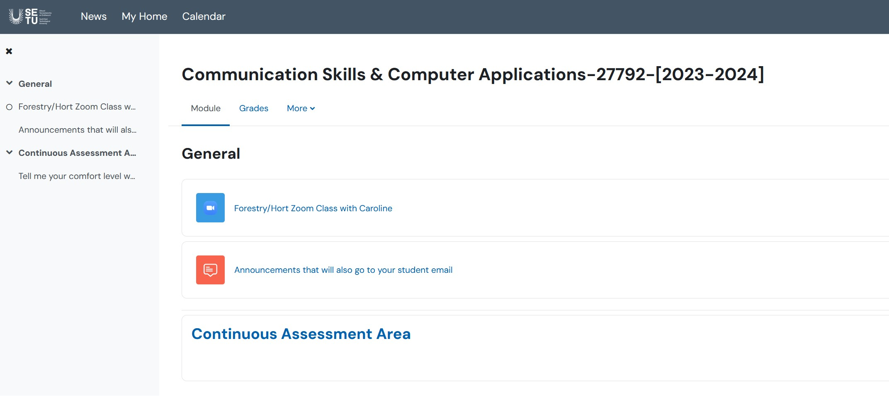

Lab
Sem 1 Computing
Class Content
Supports · Tabs · Headings · TOC · 3% CA
Where can I find my class content?
- Class notes and assessment details:
You are now on your https://computingclass.netlify.app webpage that will be your base site for contents for my class
You will need to set up a netlify account
This contains your
- Zoom link and
- Continuous Assessment upload areas

Your Zoom class password is compclass
- If you would like to know more about how Assistive Technologies can support your learning, the AT Hive from AHEAD.ie will answer all of your questions and suggest technologies to match your needs. If you have any questions please contact the Moodle support desk
Please feel free to email me if you’ve any queries or concerns
Best of luck with the Semester!
Caroline Cahill
Supports Available
-
Students will be able to apply for the SETU Laptop Loan Scheme
-
You all have access to install FREE Microsoft Office, saving the cost of a student license(about €80), on up to 5 devices
-
You all have FREE access to 1TB cloud storage through OneDrive meaning you can access documents easily from anywhere once you have internet access be in at home, SETU campus, Kildalton etc.
Create OneDrive Folders
-
Log onto OneDrive
-
Create one new folder called ComputingClass
-
Now, create five more folder, one to store content from each for your modules
BSc in Horticulture modules list

BSc in Forestry modules list
At this stage, you will have created a total of SIX folders on OneDrive… USE THEM to store content from your modules

Tabs and Heading Styles
tabs · heading styles
Create a formatted MS Word document
Heading Styles
- Create a new document and save as TabsExercise in your ComputingClass folder
- Add Heading 1 styled text Native Irish to the top of the page

Tabs
- Create tabs at 6cm and 11cm
- you can simply click on the Ruler along the top
- if the ruler isn’t there, click View and turn it on to visible
Type in the following tabbed content into your document, using the Tab key on your keyboard (above CAPS) to move between tabs:

Page Breaks
- Move your cursor to the next page using a PAGE BREAK
ctrl + Enter to move to the next page
- Add Heading 1 styled text Customers Yearly Offers at the top of the new page 2
View your Formatting
View your tabs… switch this Show/Hide button on/off to view your formatting:

Edit your tabs
Select this tabbed text and using the Ruler
- move the tab currently at 6cm back to 4cm
- move the tab currently at 8cm back to 6.5cm
It will look similar to:
- Close your document
- Exit MS Word
- Back in OneDrive, rename this file to Tabs_TOC
HOW TO RENAME IN ONEDRIVE: - login to OneDrive (you must have closed your file in MS Word to rename… why?) - find the file and click on the three dots to the side - Rename as you wish
Table Of Contents and 3% CA
By the end of this lab you will have added an Automated Table of Contents (TOC) to your final professional looking Word processed document.
Reopen your Tabs_TOC document
Recreate the following letter on a new page within the Tabs_TOC document that Woodland Nurseries Ltd are sending to Eleanor Kent in SETU
Taking note of:
- the “Business Letter” text on top is formatted as Heading 1 styled text
- the tabs for the senders address (on the right)
- left align the receivers address (on the left)
- use the Insert/Date & Time button to replace <<today’s date>>
- centre aligning “Re: Ordering trees”
- 1.5 line spacing throughout

Now, return to the very beginning of the entire document
ctrl+HOME
Create another new first page
ctrl+ENTER
Create an Automated Table of Contents (TOC)
Into this new page, we will insert an automated Table of Contents
- After you have created a document by using heading styles, you are ready to build an automated table of contents.
- Click where you want to insert the TOC (usually at the beginning of a document).
- On the References tab, in the Table of Contents group, click Table of Contents, and then click the table of contents style that you want (usually the first one)
Add a Cover Page
Insert a Cover Page template of your choice. Include:
- your name
- your course
- your lecturers name
Now your TOC is showing the incorrect page numbers because you’ve a new page 1.
Update an Automated Table of Contents
If you added or removed headings or other table of contents entries in your document, you can quickly update the table of contents.
- On the References tab, in the Table of Contents group, click Update Table.
- Click Update page numbers only or Update entire table
Finally,
- Go to the end of your document
- Insert a Page Break
- Add a new Heading 1 formatted title with the word Shortcuts
- Copy the text below into this new page, filling in the blanks
Shortcuts:
- Go get to the very top of any document:
click Ctrl + _____________
- Go get to the very end of any document:
click Ctrl + _____________
- To insert a new page:
click Ctrl + _______________
The ________ deletes to the left of the cursor The ________ deletes to the right of the cursor
UPLOAD YOUR COMPLETED WORK
Upload your completed formatted Tabs_TOC document to Moodle Continuous Assessment Upload Area (before the cut off of 9pm next Monday night)